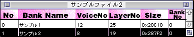
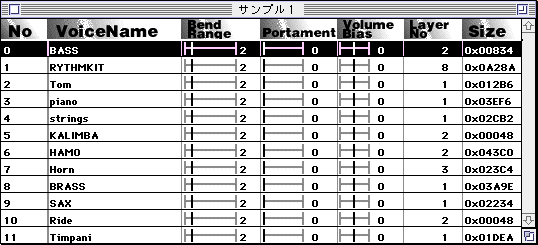
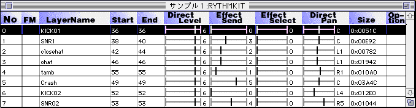
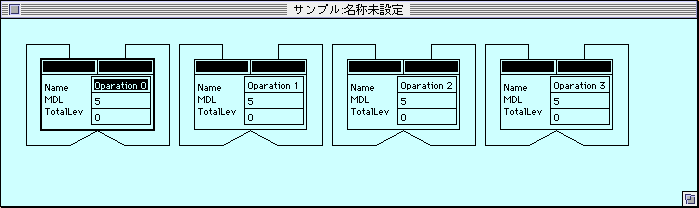
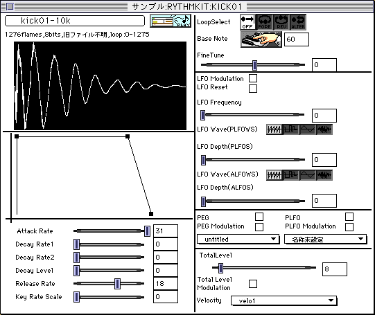

★SOUND Manual
★トーンエディタユーザーズマニュアル/
★SOUND Manual
★トーンエディタユーザーズマニュアル/


なお複数選択するにはシフトボタンを押した状態で別のボイスをクリックすると 途中にあるボイスはすべて選択状態になります。ただしパラメータエディット対 象となるのは一番最初のボイスのみです。


結線の方法は各ブロックの上方にある黒い長方形部分をクリックし別のブロック までドラッグしてやると結線したことになります。ブロック以外の所でドラッグ を終了させてしまうと自動的に自分に結線してしまいます。
後述するレイヤーパラメータウインドウを呼び出す場合は各ブロックの文字の部 分をダブルクリックしてやると呼び出せるようになっています。

★SOUND Manual
★トーンエディタユーザーズマニュアル/